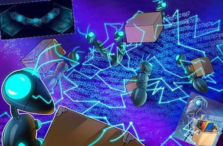

Kem gerencia ‘a’ y/o ‘u’ CAPITAL y seus 💲s “superiores” eleitorais ??? Niilismo🤡Negativo !!! Os fins autocratas dus Niilistas🤬Reativos Ñ justificam us ½s🤑plutocráticus😈totalitaristas d negação midiota dus 💲s😉democráticos em nome da economia extremista d extrema🤡direita 👈impondo👉 a ilusão d seu antigo desejo au 🐕 império das relações d submissãoau🐕Niilismo💰Passivo🙈🙉🙊Midiáti💩cu à mil ‘x’ goebbels publicidades 🤡 plutocráticas 🤑 privativas negam repetidos serviços🌲🍀🌲públicos a população obrigada au 🐕 voto ¿¿¿ MACCHIAVELLI ??? Brasil os ½s educratas📕🌲🍀🌲⚕científicos justificam os fins cooperativos🌲🌎🌲biocratas ¡¡¡ cientes !!! democracia🍊republicana ⚔ educracia 🌎 biocrata investigamus us procedimentus y/o processamentus d🎲🎲🎲d nossas experimentações empíricas dus fatos 👈y😼o👉 fakes 👈😼👉 sob a imparcialidade 👈poética😻científica👉 SIM 🥰 podemus 👈à😽SIM👉 identificar interferências y/o vícios💰publicitários💱privados à goebbels🤡crimes p/ responsabilizações aus 🐕 cargos🙈🙉🙊 privados 👈y😼o👉 públicos à parcerias👺👹🤡criminosas desregradas d licitações 👈y👉 critérios técnicos regulamentadus p/ Ñ aplicação da LEI 👈vigente👉 Q nua 👙 aguarda 😈 pelada c💰rrupçã💰 👿 kambada d emendas👹criminosas 🖕😼👉 u Kombat é feito c/ exercício da cidadania y desenvolvimento público c/
ciência dus ATUS criminosos 👎o😼u👍 legais p/ aplicação corregedora da LEI c/ soberania♻popular aus 🐕 totens poéticos 👈y👉 registros❣poéticos inteligentes 🎶 natural🧠mente 🎶 Assim c/ nossa pdç d nossos kriptopoemas ¿¿¿ mineramus ??? O ¿¿¿ q ??? kriptopoesias ¡¡¡ maneiríssimo !!! 💫né💞 Então 💪😼👉 controlamos a inflação c/ a deflação dus preços d’outras mercadorias ¿¿¿ QD ??? garantimos 💲💰imaterial inicial 👙nu🩲 papel🎭cultural mantendu nossu poema como 💲 d troca entre papeis🎭culturais y/o 🖥 mercadorias 👈miau😺miandu👉 a kriptu pdç d kripto💻poemas atende às demandadas au 🐕 portador consumidor ciente 👈TB👉 da manutenção du eqkilíbrio 👙nus🩲 ciclo🌎🌲🌍🌲🌏antropoceno poético c/ outrus ciclos bióticos y abióticos em nossa biosfera👈ou😼seja👉o kriotopoema assim como o poema au 🐕 portador Ñ é p/ ser acumulado ♪ É p/ ficar circulando 👈y😼o👉 investidus 👙 nus 🩲 projetos d desenvolvimentos🌲🍀🌲socioambientais como 😏 os d desintoxicação 💪😼👉 alimentação 💪😼👉 educação 👈y👉 profissionalização 💪😼👉 habitação p/ população na rua 💪😼👉 cooperativas d reciclagem 👈y👉 energias alternativas 💪 Reforma Agrária 👈y👉 Reforma Urbana 👈podendo😼tb👉 ser aplicado na qualidade d vida futura c/ a compra d título direto du tesouro q garante renda extr’aus 🐕 portadores q xegam na pura madura idade😸poética 🎶
Repetidas fake🤥políticas🙈🙉🙊midáticas🍊🤡🍊eleitorais à goebbels 🖕😼👉 dizem au 🐕povo 😒 u c💰ngre💲💲💰 é da política 🤡👹👺 dus partidos q t ¿¡¿representam!?! Ñ !!! a representação é du povo😏ciente! !! Mentir 🤥 sobre o currículo é mentir 🤥 a capacidade d executar akilo 👈dito👉 nu💩🩲💩currículo podendo 👈ou👉 Ñ prejudicar a gestão🌲🍀🌲pública d indicações 👈y😼o👉 licitações s/ as devidasfiscalizações tribunais d contas à MP responsabilizações 👈😼👉 mentir na política é mentir🤥capacidade d executar prejudicando todos projetos d gestão🌲🍀🌲pública 👈😼🖕 organismos 🤡👹👺 c💰rrupt💰s dão respostas antinomias⚖jurídicas pragmáticas à c💰rrupçã💰🙈🙉🙊antonímia conotativa à sinonímia🤡👹👺partidária denotativas du c💰ngre💲💲💰 d várias minorias c/ maioria corrompida à reversão da distribuição das riquezas 🙱 au 🐕 p/ au🐕to🤑au🐕mentos às maiorias d seletos grupos público👺👹🤡privado d servidores 🍊🍊🍊 c/ ambígua🤡mídi’art🙈🙉🙊empresarial à goebbels na’rte🙈🙉🙊intenciânal d propaganda💩transmissora dus 💲s🤑comerciais à receptores🤨orgânicos y na propaganda bich’opinião d mercado c/ 7 kbças às pessoas🤨receptoras d merdi💲💲iânus da segurança🌲🍀🌲pública ¿¿¿ colocados !!! p/ o controle d mercado du folclore🎭urbano impondo sua lei🤑plutocrática na oferta🌲🍀🌲popular às margens da regulamentação y controle público du mercado🌲público🌲consumidor 👈submisso😼hoje👉 au 🐕 mercado privado financeiro


Nossas conexões d 💗 c/ linguagens👅figuradas dus sentidus conotativus 👈ENCONTRAMUS👉 os sentidus denotativus das figuras conotativas 👈originais👉 d sentidos denotativus das responsabilidades à função🤡👹👺corrupta du orçamento💸secreto y/o controle à cargo du ¿ voto ? Antinomia🗳Paradoxal au 🐕 au🐕to🤑au🐕mento causa pp ¡¡¡ corrupção🤑salarial !!! certeza plena na ¿¿¿ lisura ??? du crime 😏 Ñ ter dúvidas é imaginar uma certeza plena da ¡¡¡ leniência !!! ou covardia〠criminosa 🖕😼👉 qual moeda a plutocracia à dólar ficar global🤥mente submissa ¿¿¿ QUAL ??? moeda MERCOSUL pode valorizar o nosso REAL mercado😉consumidor regional 💪😼👉 desekilibrada 👈atual👉 disputa🗳política🛂eleitoral ne💲💲a república🍊partidária💪obrigatória c/ suas promessas🤥democráticas y práticas🤑plutocráticas p/ rico 👉 pleonasmo💩brancu c/ coligações〠secretas🤑econômicas💰corruptoras🤡👹👺partidárias da espécime〠antropocena🤡irresponsável 👈alienada👉 da plenitude dus projetos🏜prioritários du índio 👉 preto 👉 pobre 👉 Macunaímas d desenvolvimento🌲🍀🌲socioambientais 💪😼👉 A gestão🌲🍀🌲publica demanda ações y projetos p/ espécime😏antropocena😸responsável em ekilíbrio c/ miau😸espécimiau🌎🌍🌏biocena
O yoga é um dus Ástika Purusha Darśanā filosofia du Hinduísmo 🎶 Geralmente está associado a filosofia d pensamento du Samkhya ou Vedanta y/o uma filosofia d comportamento 👈😼👉 Jean-Marie Déchanet um monge beneditino buscou curar♪c da epilepsia c/ exercícios y descobriu o Hatha🧘Yoga 🎶 Após curar♪c Déchanet foi o pioneiro 👈em👉 abrir o mundo cristão p/ a prática 👈du👉 Yoga 🧘 A Igreja emitiu em 1989 um documento a respeito d práticas d meditação 👈onde👉 o YOGA é mencionado 🎶 O yoga foi incluído nu 🩲 rol d Práticas Integrativas y Complementares du SUS por ½ da Port♪ nº 849 d 27 d março d 2017 du Ministerio da Saúde 🎶
♪ Poema Comentário Du Portador* *Enviar p/ indiocinzento@zohomail.com * * * * * * * * * * * * * * * * * * * * * * * * *♪
♪ ♪
♪ ♪
♪_ _ _ _ _ _ _ _ _ _ _ _ _ _ _ _ _ _ _ _ _ _ _ _ _ _ _ _ _ _ _ _ _ _ _ _ _ _ _ _ _ _ _ _ _ _ _ _ _ _ _ _ _ _ _ _ _ _ _♪
O desenvolvimento limitado au 🐕 Vale du Nilo 🤔 s/ a expansão comercial 👈através👉 du Mar Vermelho y/o contato du povo c/ nações du Vale du Indo 😏 reconhecido 👈AKÍ👉 como influenciador comercial𓁏𓀸𓀡cultural dus faraós 🐃 por suas práticas Ñ praticadas por povos🤑apropriadores 🖕😼👉 d ekilíbrio MENTE 👈y👉 CORPO hindu 🎶 A escrita harapeana Ñ codificada é composta por selos hindus d famílias ♪ clãs ♪ deuses ♪ rituais y símbolos꙰ꙮ꙲comerciais 👈indecifrável👉 à escrita codificada𓁏𓂀𓀡hieroglífica 👉 hierática y demótica 🤔 nu🩲Egito👈😼👉a cidade d
hindu’arianos como Sapta Sindhu 👈😼👉 influenciou a ilusão y distorções hindeuropeia da existência d uma raça🤡ariana originando os nazistas🤡europeus
Relações d pdç🏭material determinam relações 👈entre👉 classes p/ dissociação da plenitude social à parte du trabalho psic🤑’permutado du 💲🌲🍀🌲orgânico alienado à pdç integral du objeto📱inorgânico produzido 👉 MARX revelou a + valia gerada na pdç🏭material 👈😼👉 idealizar o comunismo europeu s/ o estudo prático das relações📕educacionais 👈😼👉 edcucracia 👈rumu😸à👉 biocracia p/ pdç du conhecimento 👈AKÍ👉 dependente da educracia📕🍀📕coletiva 👉 A ESCOLA PERENIALISTA da extrema🤡direita fonte du nazismo⛲fascismo c/ estudos psico👿✟👿religiosos na crença da existência d uma raça hindeuropeia à CONSTANTINO 👈desqualificando👉 real influência>faraônica> na linguagem 👈y👉 religião europeia p/ controle y manipulação d massa q; buscam rikesas🤑imaginárias nu 🩲 paraíso eternizado Ñ na distribuição das rikesas💱reais em nossa breve passagem nestas🌎Terra c/ cooperativismo 👉 ESCOLA D FRANKFURT analise du pensamento filosófico y sociológico c/ a psicanalise linguística 👈y👉 existencialista p/ releitura d MARX na ideologia✡judia💰burguesa 👈denuncia👉 algumas estruturas d dominação política ♪ econômica ♪ cultural ♪ psicológica da sociedade consenso 👈dialética👉 à teoria crítica da razão iluminista colocando em xeq o avanço moral y científico caminhando lado a lado c/ a escolarização da sociedade proprioceptiva 👈pós💥guerra👉 vestibulares críticas à dupla🎭face da cultura y ciência nu 🩲 debate 😒 indústria cultural d massa 👈y👉 suas formas Estatais d legitimação na sociedade consenso👈d👉consumo 🎶